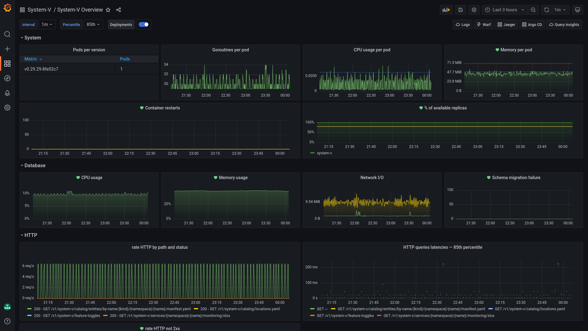

Three years of Grafana dashboards as code
Jump to: TL;DR
Voi in 2019 was a stimulating working environment. The micro-mobility industry was in its infancy, evolving at a very fast pace, and so was our product and platform.
The same couldn’t be said about the state of our Grafana dashboards.
We did have Grafana and Prometheus running, but our microservices were poorly covered in alerting and monitoring. Maybe even worse: the few existing dashboards were often incomplete and looked completely different from one service to the next.
Overall, we had no confidence in our ability to observe the state of our systems, and the heterogeneity of our dashboards was negatively impacting our ability to understand them.
At this point, we were looking for ways to improve the situation on two key points:
- coverage: every service should have at least a default level of observability
- cognitive load: dashboards should look and feel consistent. Engineers should be comfortable jumping between dashboards without having to re-learn everything.
But first, a bit of context.
The wonders of standardization
Microservices at Voi have one small but important particularity: they are all
written in Go and based on svc.
Not exactly a framework, svc can be seen as a very lightweight life-cycle
manager. It acts as the entry point of a service and manages workers.
A worker represents a long-running process, such as an HTTP or a gRPC server.
Having a collection of such workers allows for a high level of uniformity, especially when it comes to the metrics they expose.
Because of svc and its workers, we can rely on consistent metrics being
exposed:
- a service with a gRPC API will expose
grpc_server_handled_total,grpc_server_handling_seconds, … - a service with an HTTP API will expose
http_request_total,http_request_duration_seconds, … - and so on for other workers
Dashboards as code with Grabana
Having known metrics consistently emitted by services is a huge advantage.
Our idea to make the most of it was simple: using these metrics, generate a standard Grafana dashboard for every service in our platform.
This standard or “overview” dashboard will represent a service’s health and performance at a glance
Of course, services are slightly different from each other. Some only have an HTTP server, others have only a gRPC one, some have both, …
We will need to account for these differences when building the dashboards.
Despite these differences, a common structure can be imagined:
- dashboards will be grouped by service, every service having a folder named after it in Grafana
- dashboards will be named “[service name] overview”
- the dashboard’s content will be organized in rows. One row for system metrics and graphs, one for HTTP, one for gRPC, … If a row isn’t relevant for a service, it is dropped
- since these dashboards are generated, they will be read-only
Let’s take as an example a service system-v that has a database and an HTTP
server. We would like to run the following command:
1voictl grafana setup-dashboard system-v \
2 --with-http \
3 --with-db
And get this result:
Assuming we can implement the voictl grafana setup-dashboard command, generating a dashboard
for each service in the platform becomes an entirely achievable goal.
But how do we implement it? Are there any libraries around to generate Grafana dashboards?
Three years ago, defining Grafana dashboards as code wasn’t a hot topic at all. The choice of tools was extremely reduced and nothing convinced us:
- Grafonnet: based on Jsonnet, it meant asking Voi engineers to learn a new language, making contributions and adoption more difficult
weaveworks/grafanalib: seemed quite interesting, but no one in our engineering community was proficient with Python (beyond short scripts)
Enters grabana!
As a response to this lack of open-source solutions, I decided to share my own.
Grabana is a Golang library that exposes a developer-friendly API to create Grafana dashboards. Its stated goals are:
- providing an understandable abstraction over Grafana’s internal representation of a dashboard
- expose a developer-friendly API
- allow IDE assistance and auto-completion
Thanks to grabana, writing truly generic and re-usable Grafana dashboards becomes a breeze:
1builder := dashboard.New(
2 "System-v overview",
3 dashboard.AutoRefresh("1m"),
4 dashboard.Tags([]string{"system-v", "generated"}),
5 dashboard.VariableAsInterval(
6 "interval",
7 interval.Values([]string{"30s", "1m", "5m", "10m", "30m", "1h", "6h", "12h"}),
8 ),
9 dashboard.Row(
10 "HTTP",
11 row.WithGraph(
12 "HTTP Rate",
13 graph.WithPrometheusTarget(
14 "sum(rate(http_request_total{app='system-v'}[$interval])) by (method, path, code)",
15 prometheus.Legend("{{ code }} - {{ method }} {{ path }}"),
16 ),
17 ),
18 ),
19)
20
21ctx := context.Background()
22client := grabana.NewClient(
23 &http.Client{},
24 "http://grafana.local",
25 grabana.WithAPIToken("such secret, much wow"),
26)
27
28// create the folder holding the dashboard for the service
29folder, err := client.FindOrCreateFolder(ctx, "System-v")
30if err != nil {
31 fmt.Printf("Could not find or create folder: %s\n", err)
32 os.Exit(1)
33}
34
35if _, err := client.UpsertDashboard(ctx, folder, builder); err != nil {
36 fmt.Printf("Could not create dashboard: %s\n", err)
37 os.Exit(1)
38}
grabana allowed us to go from a sporadic
coverage with highly heterogeneous dashboards, to having every service covered
by a standard, unified dashboard.
As a bonus, these dashboards also came with pre-defined alerts!
Almost overnight, our confidence in our monitoring and alerting saw a huge boost.
However, the best side effect was on the cognitive load associated to working with these dashboards. Since they are highly standardized, the time invested in understanding an overview dashboard for a service automatically transfers to the overview dashboard for any other service!
Custom dashboards as code with DARK
Standard dashboards are a good starting point, but there is only so much they can show.
Service-specific dashboards are a must-have to gain any meaningful confidence in the state of our platform. Each service should have dashboards tailored to tell the story of some particular aspect of that service: how is payment processing behaving? What’s the state of our vehicle fleet? …
Teams have been creating this kind of dashboard manually. However, like any manual work, this approach comes with a few downsides:
- creating and configuring dashboards in a UI is tedious, repetitive, and error-prone
- there is a huge drift in coverage and configuration depending on the environment
- close to no traceability on what changes are made to a dashboard and why
- no review/discussion is possible whenever a change is made
- the lifecycle of a service is separated from its dashboards. Releasing or rolling back a service often results in out-of-date dashboards
To solve these issues, DARK was born!
Based on grabana, DARK is a Kubernetes operator that
provides a way to provision dashboards, datasources, and Grafana API keys as code.
1apiVersion: k8s.kevingomez.fr/v1
2kind: GrafanaDashboard
3metadata:
4 name: payments-business
5 namespace: payments
6 annotations:
7 dark/folder: "Payments"
8spec:
9 title: Payments Business
10 shared_crosshair: true
11 tags: [generated, payments]
12 auto_refresh: 1m
13
14 variables:
15 - interval:
16 name: interval
17 label: interval
18 default: 1m
19 values: [30s, 1m, 5m, 10m, 30m, 1h, 6h, 12h]
20
21 rows:
22 - name: Payment processing
23 panels:
24 - timeseries:
25 title: Processing rate
26 targets:
27 - prometheus:
28 query: "sum(rate(payments_processing[$interval])) by (provider, status)"
29 legend: "{{ provider }} - {{ status }}"
30
31 - graph:
32 title: Failed payments
33 targets:
34 - prometheus:
35 query: "sum(rate(payments_processing{status='failed'}[$interval])) by (provider)"
36 legend: "{{ provider }}"
With DARK, Grafana dashboards are described
as Kubernetes manifests. As such, they follow the same process as the service
they observe:
- versioned in git
- reviewed in pull requests
- released and rolled back with the service they describe
- deployed in all the environments in which the service lives
And since not everyone is comfortable with writing YAML, a converter is provided to ease the transition from existing, raw Grafana dashboards to DARK ones.
Developer experience
Seeing the benefits of declaring our custom dashboards as Kubernetes manifests
made us realize how painful it was to define “standard dashboards” using our
voictl tool.
1voictl grafana setup-dashboard system-v \
2 --with-http \
3 --with-db
One such command was required per service and per environment. They were written in a simple bash script and executed in a Github Action, whenever a change is made to that file.
This process was fine for some time… until it wasn’t.
Maintaining the bash script became quite painful as the number of microservices increased.
It was yet another manual step to perform when creating a new service.
And this script lived in a separate GitHub repository: far away from the services or their Kubernetes manifests.
As a response, we decided to declare these standard dashboards as Kubernetes manifests too!
These manifests are managed by an internal project: Dashung.
Instead of relying on a CLI tool and a quick’n’dirty bash script, we now have a Kubernetes operator that manages manifests such as this one:
1apiVersion: voi.k8s.voiapp.io/v1
2kind: DefaultDashboard
3metadata:
4 name: system-v
5 namespace: system-v
6spec:
7 owner: developer-experience
8 tier: 4
9
10 http:
11 enabled: true
12 # Threshold rate for the "non-OK" alert.
13 error_threshold: "1"
14
15 db:
16 name: "system-v"
Internally, Dashung uses grabana exactly like our CLI used to.
These dashboard manifests being close to the service itself, we could effortlessly find and maintain them.
As a nice side effect, it allowed our service scaffolding to generate them automatically whenever new services are created.
And as an even nicer bonus, we defined additional types of standard dashboards:
BigTableDashboard: to observe a BigTable clusterDataflowDashboard: to observe Dataflow jobsObservabilityDashboard: to visualize observability-related metrics (how many metrics is my service producing? What’s their cardinality? How many logs? …)
Having services monitored by default and in a standard way was never easier.
Looking back
The following quotes are taken from surveys sent out to our engineers:
standard dashboards make my life insanely much easier for some things. Can never have enough of such tools
Or
default dashboards makes it really clear
Our approach to standard dashboards is often mentioned positively whenever we ask things like « What parts from your developer experience at Voi make you happy » or « How easy is it to detect anomalies, find their root cause and fix them? »
It took us some time to find or build the tooling that we needed and piece everything together in a coherent experience, but it was more than worth it.
Every service has monitoring and alerting by default. These dashboards being described as code, their configuration can openly be discovered, updated or even generated during service scaffolding.
It truly contributed positively to the engineers’ experience, allowing them to focus on solving business problems.
10/10 would do it again!
TL;DR
- consistency, structure and impact on cognitive load in dashboards are key
- defining standard dashboards as code for a virtually free first layer of observability and alerting
- grabana provides a developer-friendly way of creating Grafana dashboards in Golang
- service-specific dashboards should be defined as code too
- DARK provides a way to define and deploy Grafana dashboards via Kubernetes
- default dashboards should be created during service scaffolding